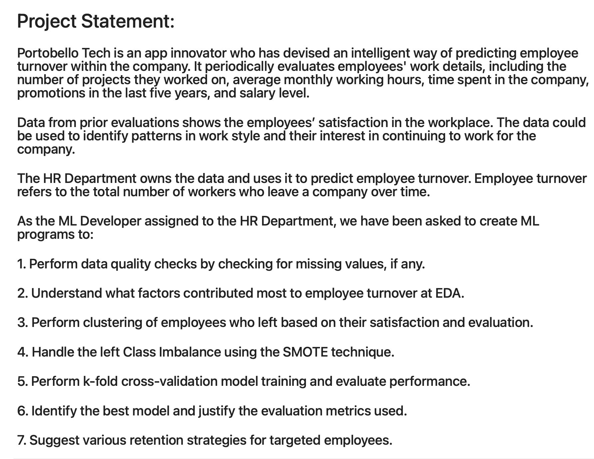

Github links to projects
AI: ChatGPT Transhumanist Short Story Collaboration
Python: Car Rental Terminal Project
Data Analysis: Exploratory Data Analysis, Visualizations and Hypothesis Testing for a Marketing Campaing
Machine Learning: Employee Turnover Prediction Model Project
